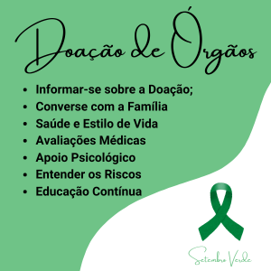
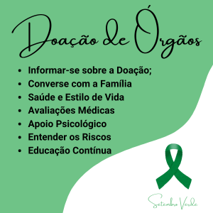
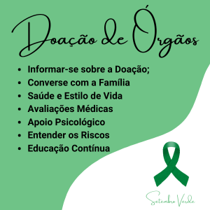

Setembro Verde é uma campanha de conscientização que aborda a importância da prevenção e do diagnóstico precoce do câncer, especialmente o câncer de intestino. Este tipo de câncer é um dos mais comuns, mas quando detectado precocemente, as chances de tratamento e cura aumentam significativamente.
Além da conscientização sobre o câncer, o Setembro Verde também destaca a importância da doação de órgãos. A doação é uma forma de salvar vidas e pode ser crucial para pacientes que necessitam de transplantes, especialmente aqueles que enfrentam doenças avançadas, como o câncer.
O Setembro Verde é uma campanha de conscientização que surgiu no Brasil, focando na prevenção do câncer, especialmente o câncer de intestino, e na importância da doação de órgãos. Sua história começa com a necessidade crescente de educar a população sobre esses temas, que, embora críticos, eram pouco discutidos.
A campanha foi iniciada em 2014, quando organizações e entidades de saúde começaram a promover a conscientização sobre o câncer de intestino, que é um dos tipos mais comuns de câncer no Brasil e no mundo. O mês de setembro foi escolhido para simbolizar a luta contra essa doença, promovendo ações de prevenção e diagnóstico precoce.
Com o passar dos anos, a campanha foi ampliada para incluir a doação de órgãos, destacando a importância desse ato altruísta como uma forma de salvar vidas. A inclusão da doação de órgãos fortaleceu a mensagem de solidariedade, mostrando como a prevenção e a ajuda ao próximo podem coexistir em um mesmo esforço.
Setembro Verde envolve diversas ações, como palestras, eventos educativos, distribuição de materiais informativos e campanhas nas redes sociais. O objetivo é sensibilizar a população sobre a importância da detecção precoce do câncer e a relevância da doação de órgãos.
A campanha tem contribuído para aumentar a conscientização sobre esses temas, incentivando a população a adotar hábitos saudáveis e a considerar a doação de órgãos como um ato de amor e solidariedade. Assim, Setembro Verde se tornou um mês significativo de reflexão e ação em prol da saúde e da vida.
